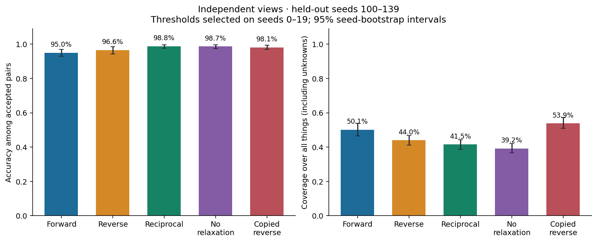
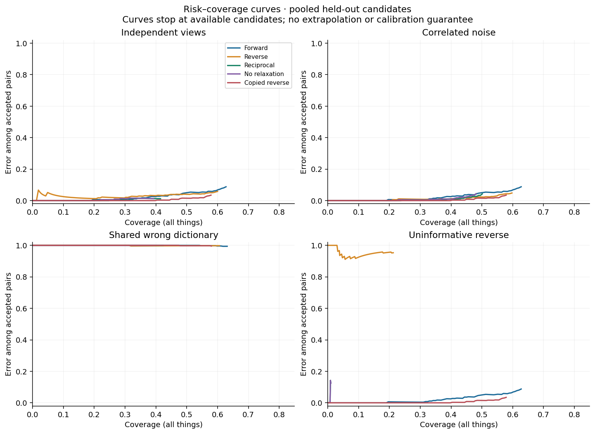
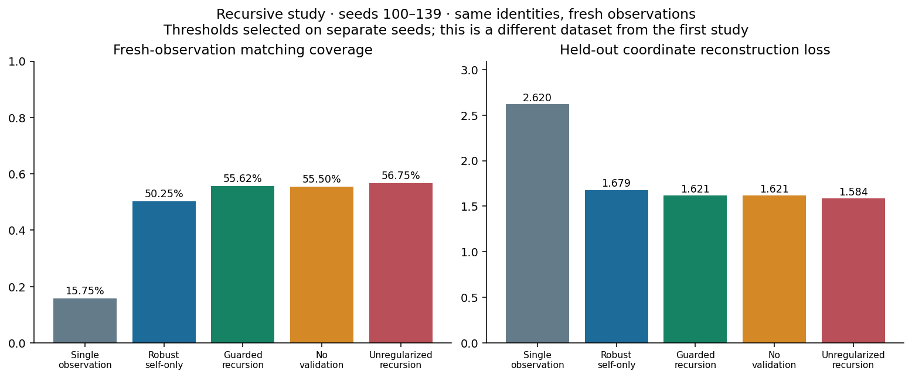
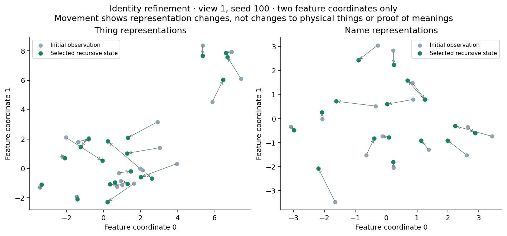

HRL / REPRODUCIBLE EXPERIMENT 01
Things name words.
Words name things.
Run the relationship in both directions. Find reciprocal support. Keep the evidence—and the right to revise.
Synthetic instance matching · 40 held-out seeds per condition · explicit unknowns · no claim of universal truth discovery
01 / INSPECT THE ASSIGNMENTS
Two experiments. One proposed pairing.
Things are objects in the forward view. Words become objects in the reverse view. Explore the stored strength fields and change the acceptance threshold below.
Select a cell to inspect both directions.
Inspect all proposed correspondences
| Thing | Word | Forward | Reverse | Decision | Hidden synthetic answer |
|---|
02 / MEASURE THE TRADE-OFF
Accuracy needs a coverage denominator.
A method can reduce accepted errors by refusing difficult assignments. Compare both quantities, including the copied-reverse baseline that contributes no new evidence.
| Method | Accuracy | 95% accuracy interval | Coverage | Correct / accepted |
|---|
Curves rank eligible candidates by strength across 40 test seeds. Curves stop at available candidates. They are descriptive, with no calibrated risk guarantee or simultaneous confidence bands.
03 / READ THE RESULT, INCLUDING THE FAILURE
Agreement filters. Agreement can also be wrong.
With separate noisy views, reciprocal acceptance improves accepted accuracy while reducing coverage. With a shared wrong dictionary, it confidently accepts the wrong mapping. The copied-reverse baseline is strong here: some gains come from matching constraints, rather than independent corroboration.


04 / RECURSIVE IDENTITY REFINEMENT
Things become more like themselves.
Names move toward their referents.
A GRRLE-inspired finite loop refines both representations, then rebuilds the reciprocal relations. Original measurements remain anchors; validation can stop the loop and roll it back.
New repeated-measurement study: same identities, fresh test observations. It is separate from the original benchmark above.
| Method | Accepted accuracy | Coverage | Test coordinate loss | Mean selected round |
|---|
Coordinate loss measures agreement with fresh measurements, not semantic truth. Both loss and matching are evaluated on observations withheld from refinement. Depth controls inspect saved seed-100 states, not live training.


What this first experiment establishes
A tested reciprocal acceptance rule, an explicit unknown state, a revisable provenance interface, and a reproducible small synthetic benchmark. It does not establish real-world semantic grounding, mathematical novelty, calibrated probabilities, or a general advantage over stronger matching methods. The oracle audit in the example demonstrates bookkeeping; it does not discover independent evidence.
The first implementation uses unique instance identifiers. Natural language's synonyms, polysemy, and many-to-many associations need a broader model.